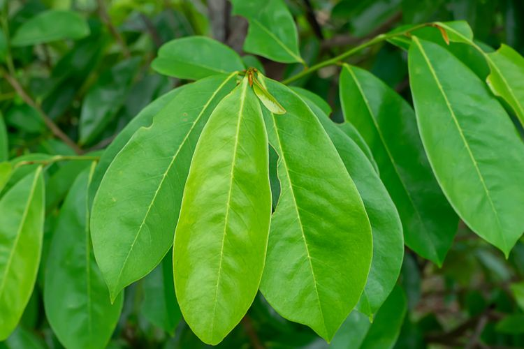
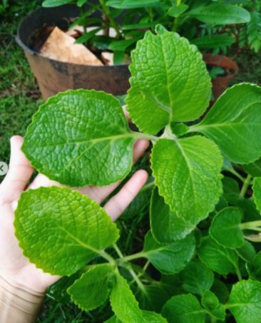
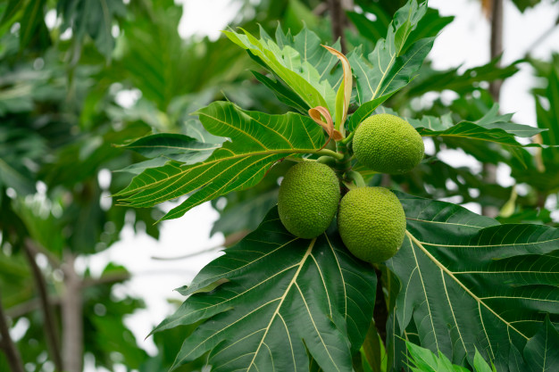
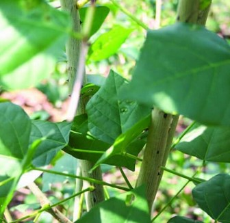
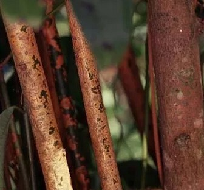
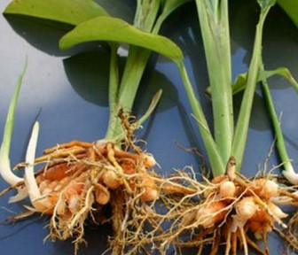

Daun
Daun adalah salah satu organ tumbuhan yang tumbuh dari ranting, biasanya berwarna hijau (mengandung klorofil) dan terutama berfungsi sebagai penangkap energi dari cahaya matahari untuk fotosintesis.
Daun Sirsak

Daun sirsak untuk mengatasi maupun mencegah gangguan kesehatan seperti kanker, diabetes, mengontrol kadar kolesterol, atasi penyakit paru-paru, dan meningkatkan sistem kekebalan tubuh. Untuk mendapatkan manfaat daun sirsak, biasanya daun sirsak direbus terlebih dahulu, kemudian air rebusan daun sirsak dikonsumsi sebagai obat
Daun Jintan

Daun jinten mengandung minyak atsiri yang juga mengandung karvakol, fenol, dan lain-lain. Dengan kandungan yang dimilikinya, daun jinten mempunyai banyak sekali manfaat untuk kesehatan, diantaranya untuk mengobati perut kembung, obat sakit kepala, mengobati penyakit ayan, menyuburkan ASI, mengobati rematik, serta mengembalikan kekebalan tubuh.
Info Lebih Lengkapnya Akses di tanaman obat daun
Batang
Batang merupakan organ dasar pada tumbuhan berpembuluh. Keberadaan batang adalah untuk mendukung bagian-bagian lain dari tumbuhan seperti daun, bunga, dan buah. Batang memiliki struktur yang kompleks dari pada akar tumbuhan karena memiliki ruas dan antar ruas.

Kulit batang sukun bersifat antiradang sehingga kerap digunakan untuk mengatasi luka lambung. Caranya, ambil kulit terluar batang sukun, lalu keringkan selama 4 hari.

Batang tanaman dadap ayam ini berfungsi untuk mengobati yang berhubungan dengan pernafasan seperti sesak nafas dan sakit tenggorokan.

kayu manis juga bermanfaat untuk pengobatan yaitu dapat mengobati batuk dan juga sesak nafas, mengatasi masuk angin dan perut kembung, mengatasi diare dan sembelit.
Akar
Akar memiliki fungsi utama sebagai alat penyangga tanaman agar tetap berdiri dengan baik. Kemudian, akar juga sebagai menyedia nutrisi yang dibutuhkan oleh tumbuh kembang tanaman. Seolah akar merupakan garis hidup bagi sebuah tanaman, yakni menyediakan air, nutrisi dari tanah kemudian memindahkannya ke daun, mengambil udara, jangkar pengambil gula, dan masih banyak lagi lainnya.
Akar Pepaya
Akar dari tanaman pepaya ini mengandung kalium, damar, tasin, papalna, papayasin, yang mampu membasmi cacing didalam tubuh yang merugikan.
Akar Temu Lawak

Akar temu lawak dapat mengatasi gangguan ginjal, menyehatkan jantung, kesenatan hati dan juga melancarkan pencernaan.
\ Info Lebih Lengkapnya Akses di tanaman obat akar